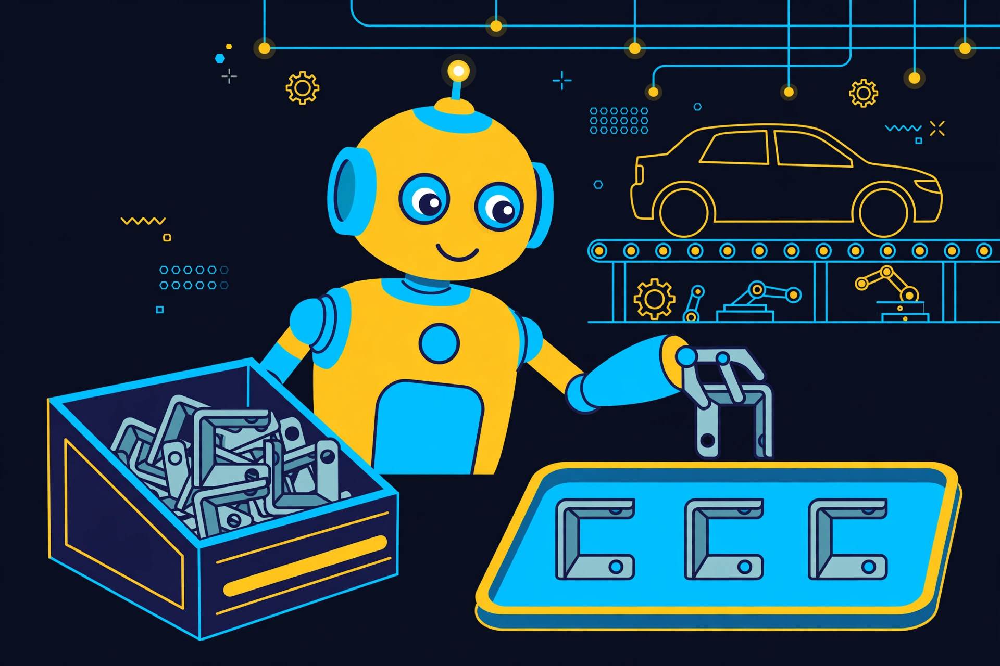
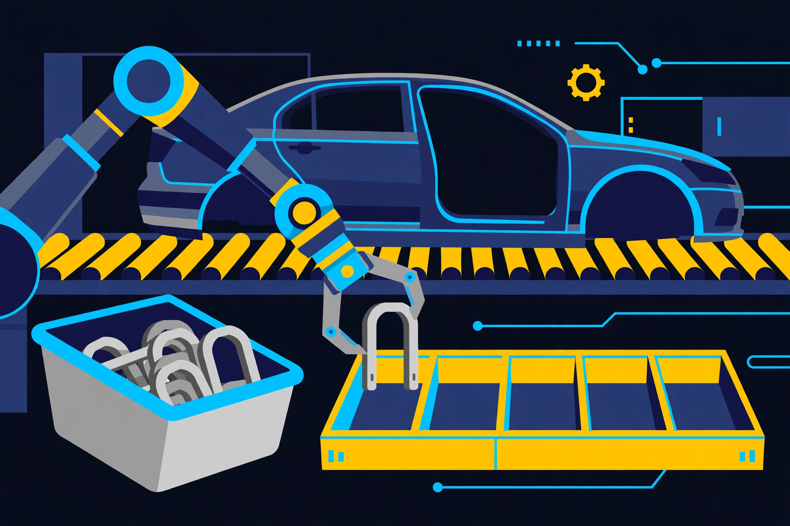

Robot Brains, Explained: How Vision-Language-Action Models Teach Machines to Work
A robot that can see, understand words, and move its own hands. Here is the model behind the factory pilot, how it learns from watching people work, and why it still drops things.

1 What it is
A vision-language-action model — a VLA model — is the brain of a modern robot. It takes two inputs, what the robot’s cameras see and an instruction in plain language, and it outputs the robot’s next moves: where each joint should go, how fast, and in what order. Nvidia’s definition is the cleanest one: a VLA is a foundation model that takes visual input and language instructions and outputs low-level actions for an embodied agent, such as a robot.
The idea took off in 2023, when Google DeepMind’s RT-2 showed that a model trained on web-scale images and text could be taught to control a robot arm. The insight was that the internet had already taught models what objects are, what they are called, and how people use them — so a robot did not need to be taught each task from scratch. It needed a model that already understood the world, plus a way to turn that understanding into motion.
Think of it this way. A traditional industrial robot is a recording: it repeats the exact motions a programmer wrote for it, in a space designed around it. A VLA robot is a new hire with good eyes and a shared language: you tell it what to do in words, it looks at the scene, and it figures out the moves itself — including when the scene is not quite what it expected.
2 How it works: the loop
Every VLA robot, whatever body it runs on, runs the same loop:
1. See — cameras take in the scene: the bins, the parts, the tray, the other arm. 2. Understand — the model matches the spoken instruction to what is in view: which bracket, which tray, in which order. 3. Move — it outputs a chunk of actions at once, a short sequence of joint positions and speeds, rather than one tiny step at a time. 4. Check — it looks again at the result, corrects the error, and repeats until the task is done.
Training happens in phases, and the order matters. First comes pre-training, the largest phase: the model learns general abilities from internet-scale data — images, text, video, and increasingly robot demonstrations — without being taught any specific task. Then post-training adapts that general model to one robot and one job, using demonstrations that map observations and instructions to actions. At run time, the weights are frozen; the model just sees, understands, and moves, several times a second.
A concrete example: automotive kitting, the job in today’s briefing. The instruction is “pack the brackets for the next car, in order.” The robot looks into a bulk bin, finds a bracket, picks it up, and places it in the sequencing tray — correcting for a part that slipped, or a bin that is nearly empty, instead of stopping and waiting for a human to reprogram it.
3 Robot brain vs script vs remote control
A scripted robot repeats motions a programmer wrote in advance. It is fast, precise, and cheap — and it stops the moment anything changes. A part in the wrong place, a different tray, a new task: all of it needs a human to rewrite the program. Most of the robots in factories today are scripted robots.
A teleoperated robot is driven by a human, live, from somewhere else — a person wearing data gloves or moving a controller while the robot copies them. It handles novelty well, because a human is doing the thinking, but it needs a human for every minute of work. It is a puppet, not a worker.
A VLA robot is the third thing: it holds the instruction, looks at the scene, and decides its own moves. That freedom is the point — and the cost. It is slower than a scripted arm, it needs far more computing power, and every step is a chance for a small misread to become a dropped part. The trade is flexibility for speed: the VLA robot can do a job nobody programmed for it, on a line nobody redesigned for it.
4 Why everyone’s building them now
Two announcements in two days are the same story. On Tuesday, Google DeepMind launched Gemini Robotics 2.5, its most capable vision-language-action model, and said Apptronik’s Apollo 2 humanoids running it picked and packed automotive parts on active Mercedes-Benz lines in Hungary and Germany with a 96 percent success rate. DeepMind tested the model on more than 200 tasks, from tying bows to pipetting liquid, and says it succeeds 30 to 100 percent more often than its predecessor and finishes 20 to 30 percent faster.

On Sunday, at the Conference on Robot Learning in Austin, Nvidia unveiled GR00T 2, a model that learns by watching people. Instead of mapping a camera image straight to motor commands, GR00T 2 predicts the next few frames of video and the robot’s next actions together — it imagines how the scene should change as it acts. It was trained on 402,730 hours of head-mounted video of people at work, plus 10,184 hours of handheld-gripper demonstrations and 23,500 hours of robot teleoperation. Nvidia says it reached 95 percent average success across 50 tasks after fine-tuning on five demonstrations per task, and a robot hammered nails after watching a single human video.
The bet is simple. Factories, warehouses, and homes are built for people, not for scripted arms. A robot that can work in a human space, on a human instruction, without the space being rebuilt around it, is worth more than a faster arm on a fixed line. That is why the first real test is kitting — a job that is repetitive, physical, and just unstructured enough that a scripted robot cannot do it.
5 The honest part
Here is the catch, from today’s briefing too. That 96 percent is DeepMind’s own figure from a proof of concept, and the company published no trial count behind it — 96 out of 100 and 960 out of 1,000 are both 96 percent, and they mean very different things. Neither Mercedes nor DeepMind has said whether the humanoids will stay on the lines, and the model is only available to robotics partners, with no public price or launch date.
GR00T 2 has its own honest limits, and Nvidia’s own numbers show them. The model cannot yet use direct touch sensors, so it cannot feel what it is holding. It sometimes misses subtle errors. And when paired with a higher-level language model to plan the steps, each planning step adds about seven seconds of latency — in trash-sorting trials, the robot sat idle for roughly a third of the time. Nvidia calls GR00T 2 open, but the weights and code are not due until December; for now the release is the data, the paper, and the demos.
So the state of robot brains in 2026 is: the demo is a robot doing a real job on a real line, and the gap is everything around it — speed, touch, reliability, and cost. The labs are racing to close that gap, and the factory floor is where the winner will be decided.
Key terms
- VLA model A foundation model that takes a camera image and a language instruction and outputs the robot’s next moves.
- Embodied AI An AI that acts in the physical world through a body — a robot — rather than only through text on a screen.
- Action chunking Predicting several moves at once instead of one tiny step at a time, so the robot moves smoothly and quickly.
- Teleoperation A human driving a robot live, with gloves or a controller, while the robot copies the movements.
- Sim-to-real Training a robot in simulation first, then transferring what it learned to the real machine.
- World action model A model that predicts how a scene will change as the robot acts, not just what the robot should do next.
This lesson comes from today’s Daily Tech Briefing (Episode 30, November 11, 2026): Anthropic’s IPO roadshow, Microsoft’s fight over data-center parts, and robots on the Mercedes line. Read the full briefing: Anthropic’s $1.4T IPO roadshow — Daily Tech Briefing.
Google DeepMind, “Gemini Robotics 2.5: Accelerating Physical Intelligence” (November 10, 2026); NVIDIA Isaac GR00T documentation — the definition of vision-language-action models and the pre-training / post-training / inference phases; NVIDIA GR00T 2 announcement at the Conference on Robot Learning (November 9, 2026), via Tao Media and Derrington Collaborative AI; TechTimes on the missing trial count behind DeepMind’s 96% figure.